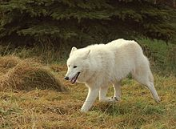

Lupul, a cărui denumire științifică este Canis lupus, (Linne, 1821), este inclus din punct de vedere sistematic în familia Canidae, alături de câine, vulpe, șacal și enot. Pe vremuri, lupul era prezent în întreaga emisferă nordică, adaptându-se cu succes la cele mai diferite condiții de trai. Pentru a se descurca în aceste condiții diverse, lupul a fost nevoit să învețe să vâneze cele mai diferite varietăți, fie insecte, rozătoare, sau animale mai mari, cum este elanul, bizonul sau boul moscat. Este un vânător foarte talentat, însă modul lui de trai are un impediment major: este concurentul direct al omului, și pe majoritatea zonei lui de răspândire a pierdut în această luptă inegală. Lupul este cea mai mare specie din familia câinilor (Canidae). Cele două specii de lupi sunt lupul (Canis lupus) și lupul roșu (Canis rufus). Subspeciile lupului sunt lupul arctic (C. l. arctos), lupul nord-american (C. l. lycaon), lupul de șes (C. l. campestris) și lupul obișnuit (C. l. lupus).

Lupul este răspândit în: Canada, Alaska, Europa de Est, Peninsula Scandinavă, Rusia, Orientul Apropiat, Asia Centrală și Siberia, dar densitatea lor este în general redusă pe aceste arii. Lupul are mai multe subspecii distincte, cum este lupul arctic, lupul de pădure nord-american, lupul de stepă din deșerturile Asiei Centrale și lupul comun, care trăiește și astăzi în pădurile est-europene și ale Peninsulei Scandinave. Lupul de pustiu este mai zvelt și mai deschis la culoare decât lupul european și nord-american, iar lupii polari din tundrele nordice sunt mai mari, având blană albă, mai groasă și trăiește atât de aproape de pol încât este nevoit să vâneze permanent în întuneric, însă este în siguranță față de inamicul principal, omul. Lupul roșu, care pe vremuri popula regiunea sud-estică a Statelor Unite, azi este foarte rar, exemplarele care trăiau în sălbăticie poate chiar au dispărut complet.
Specia inițială de lup cenușiu din Alaska a dispărut de 12.000 de ani, dar cea din prezent este o subspecie, dovedește o cercetare realizată la Universitatea din California. Cercetarea a implicat analizarea unor mostre de ADN, studierea compușilor chimici a acestora și datarea cu carbon a lupilor păstrați la Muzeul Smithsonian de Istorie Naturală. Rezultatele au fost comparate cu date de același gen obținute de la lupii care trăiesc în prezent și au scos la iveală o mare diferență, ceea ce a dus la concluzia că cele două animale sunt diferite din punct de vedere genetic. Specia originală de lup gri din Alaska a trăit în permanență de acum 45.000 de ani, probabil chiar și de mai devreme, însă datarea cu carbon nu permite stabilirea unei perioade mai înaintate decât aceasta, până acum aproximativ 12.000 de ani, explică Blaire Van Valkenburgh, profesor de ecologie și biologie evolutivă în cadrul UCLA. Această specie nu seamănă deloc cu specia modernă de lup din nordul Americii, Europa sau Asia, a continuat el. Lupul gri de acum 12.000 de ani nu diferă foarte mult din punctul de vedere al dimensiunilor de lupul gri care trăiește în prezent în Alaska, însă avea dinți mai mari și mușchi faciali mult mai puternici, fiind în stare să ucidă chiar și un bizon. Lupul din profil (C. l. lupus) Ei sufereau în principal din cauza problemelor cu dantura. Profesorul a studiat fracturi de dinți și la alte animale preistorice, precum și la speciile de acum de lei, tigri, leoparzi și lupi. Se pare că mamiferele străvechi de dimensiuni mari, își rupeau deseori dinții atunci când se hrăneau, în special pentru că spărgeau oasele prăzii. Animalele din zilele noastre preferă în schimb să smulgă carnea, evitând oasele. Înainte de această cercetare, nu se știa dacă lupii gri din Alaska sau din alte zone ale globului erau descendenți direct ai lupilor gri din Pleistocen, și nici dacă această specie a fost pierdută sau numai în pragul extincției în America de Nord. În trecut lupii au populat tot teritoriul insulelor Britanice. După bătălia de la Hastings din 1066, soldații englezi căzuți au fost lăsați pradă viermilor și lupilor pe câmpul de luptă. În secolul XVI, sub domnia reginei Maria Stuart, în Scoția a avut loc o invazie de lupi. Ultimul lup scoțian a fost omorât în 1743. Lupii au fost exterminați din toate țările Europei Centrale și de nord în perioada secolului XIX și al doilea război mondial. Au mai rămas populații în Portugalia, Spania, Italia, Grecia și Finlanda, deși lupii au repopulat în mod natural multe părți ale Europei; recolonizând Franța, Germania, Suedia și Norvegia. Cele mai mari populații sunt întâlnite în Europa de est, România, Peninsula Balcanică și Polonia. În România, lupul, vânat frenetic în vremea lui Ceaușescu, nu mai prezintă un areal continuu, nenumărate goluri fiind create de vânarea necontrolată. În mod natural lupul se găsește în România în Delta Dunării, în golul alpin, prezentând o mare amplitudine ecologică, datorată inteligenței sale deosebite, așa cum se întâmplă și în cazul corbului..